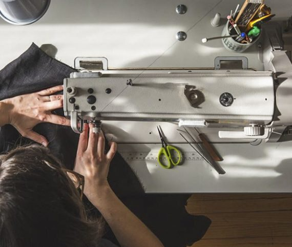

Écoute du projet
Comprendre l'envie, l'usage, la silhouette et les contraintes de la pièce.
Une méthode claire, humaine et précise pour créer ou transformer vos vêtements avec exigence.

Le savoir-faire Faty Style ne se limite pas à la couture. Il commence par une écoute attentive de votre besoin, de votre morphologie, de l'occasion et du confort attendu.
Chaque projet avance avec des choix concrets : matière, volume, coupe, ajustements, détails, doublures et finitions. L'objectif reste toujours le même : une pièce juste, portable et élégante.
Une organisation simple pour sécuriser votre projet couture.
Comprendre l'envie, l'usage, la silhouette et les contraintes de la pièce.
Orienter le choix des tissus, des couleurs, du tombé et des détails.
Construire une base propre avant de passer à la réalisation.
Valider les volumes et ajuster la pièce progressivement.
Affiner le confort, les longueurs, la ligne et le tombé du vêtement.
Soigner doublures, boutons, coutures, détails et rendu final.
Une adresse locale, une approche personnalisée et des créations qui respectent votre style.
Chaque pièce répond à une envie réelle, une silhouette et une occasion.
Les gestes, ajustements et finitions sont réalisés avec exigence.
L'atelier accompagne les essayages pour obtenir un tombé juste.
Une adresse de proximité dans les Yvelines, accessible sur rendez-vous.